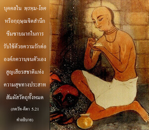

ผู้ที่หลุดพ้นเช่นนี้ไม่หลงใหลอยู่กับความสุขทางประสาทสัมผัสวัตถุ แต่จะอยู่ในสมาธิเสมอ เพลิดเพลินกับความสุขภายใน ด้วยเหตุนี้บุคคลผู้รู้แจ้งแห่งตนจะเพลิดเพลินอยู่กับความสุขอันหาที่สุดมิได้ เพราะเขาทำสมาธิอยู่ที่องค์ภควาน

ศฺรี ยามุนาจารฺย สาวกผู้ยิ่งใหญ่ในกฺฤษฺณจิตสำนึกกล่าวว่า
ยทฺ-อวธิ มม เจตห์ กฺฤษฺณ-ปาทารวินฺเท
นว-นว-รส-ธามนฺยฺ อุทฺยตํ รนฺตุมฺ อาสีตฺ
ตทฺ-อวธิ พต นารี-สงฺคเม สฺมรฺยมาเน
ภวติ มุข-วิการห์ สุษฺฐุ นิษฺฐีวนํ จ
“ตั้งแต่อาตมาปฏิบัติตนรับใช้ทิพย์แด่องค์กฺฤษฺณก็ได้รู้แจ้งถึงความปลื้มปีติสุขใหม่ๆในพระองค์เสมอ เมื่อใดที่อาตมาคิดถึงความสุขทางเพศสัมพันธ์จะถ่มน้ำลายให้กับความคิดเช่นนั้น และจะโบ้ยริมฝีปากแบบไม่ชอบใจ” บุคคลใน พฺรหฺม-โยค หรือกฺฤษฺณจิตสำนึกซึมซาบมากในการรับใช้ด้วยความรักต่อองค์ภควานฺจนตัวเองสูญเสียรสชาติแห่งความสุขทางประสาทสัมผัสวัตถุทั้งหมด ความสุขสูงสุดทางวัตถุคือเพศสัมพันธ์ โลกทั้งโลกเคลื่อนไหวไปภายใต้มนต์สะกดนี้ นักวัตถุนิยมไม่สามารถทำงานได้เลยหากขาดซึ่งแรงกระตุ้นจากเพศสัมพันธ์นี้ แต่บุคคลผู้ปฏิบัติในกฺฤษฺณจิตสำนึกสามารถจะทำงานด้วยความกระปรี้กระเปร่ายิ่งขึ้นโดยปราศจากความสุขทางเพศสัมพันธ์ซึ่งเขาพยายามหลีกเลี่ยง นั่นคือรสชาติในความรู้แจ้งทิพย์ ความรู้แจ้งทิพย์และความสุขทางเพศสัมพันธ์ไปด้วยกันไม่ได้ บุคคลในกฺฤษฺณจิตสำนึกไม่หลงใหลต่อความสุขทางประสาทสัมผัสใดๆทั้งสิ้น เนื่องจากตัวเขาเป็นดวงวิญญาณผู้หลุดพ้นแล้ว